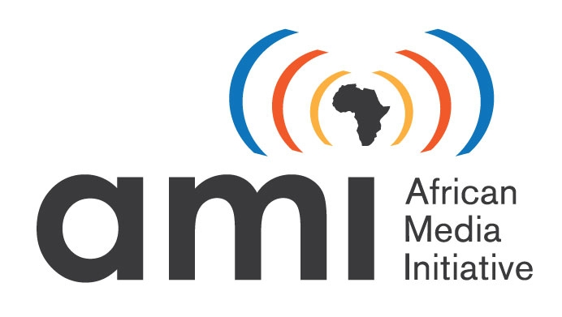
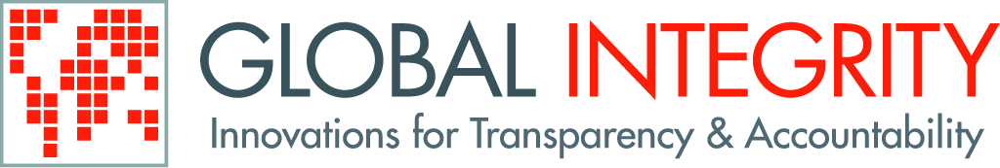

> INVITATION <
Holding Companies and Their Directors to Account: An Open Data Solution
Johannesburg: Tuesday, October 23, 18:30 - 21:00 pm
at Praekelt Foundation, 44 Stanley
Cape Town: Saturday, October 27, 18:00 - 20:30
at Umbono Accelerator, Woodstock
The “open data” movement is transforming governments’ accountability to citizens. But what about companies?
Highly interconnected global companies have exploded in complexity and power, and increasingly affect our lives for good and bad. Yet in tandem with this growth, corporate governance has weakened. The opacity and complexity of this corporate world is a key enabler of corruption, tax avoidance and organised crime.
Until now painstaking manual investigation has been required to track even the most basic facts about a company, such as whether it exists, and who owns it. Chris Taggart of OpenCorporates.com believes it’s time to change that. Chris is building an open access database with basic information on every corporate entity in the world (including 32,000 South African companies and counting), which can then be remixed and combined with other data, such as government contracts.
We invite all those with an interest in issues of corruption and transparency to a hands-on practical session to learn about Chris’s techniques and how you can put them to work for you.
PART 1: Why Open Up Corporate Data? (30 minutes)
Corporate transparency challenges globally and in South Africa (Chris Taggart)
JHB respondent - Carli LeRoux (JSE)
CPT respondent - Gabriella Razzano, ODAC
PART 2: How to Open Up Corporate Data (2hr)
Demo - What you can do with OpenCorporates database (Chris Taggart)
Q&A/Hands-on advice
Informal networking Drinks and snacks will be served
Interested? Please register online here for the Jo’burg event.
Please register online here for the Cape Town event.
